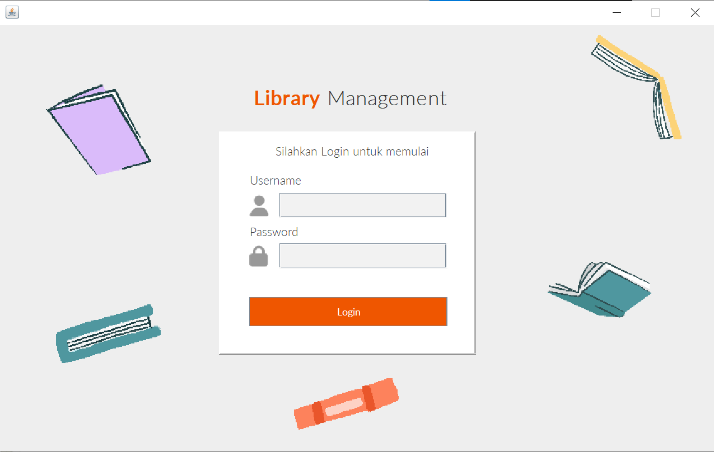
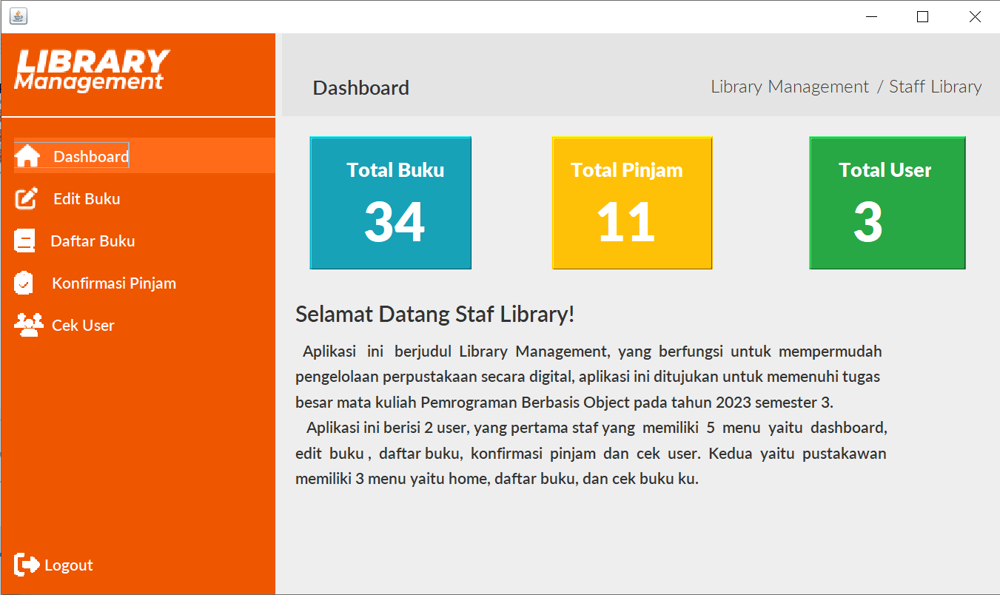
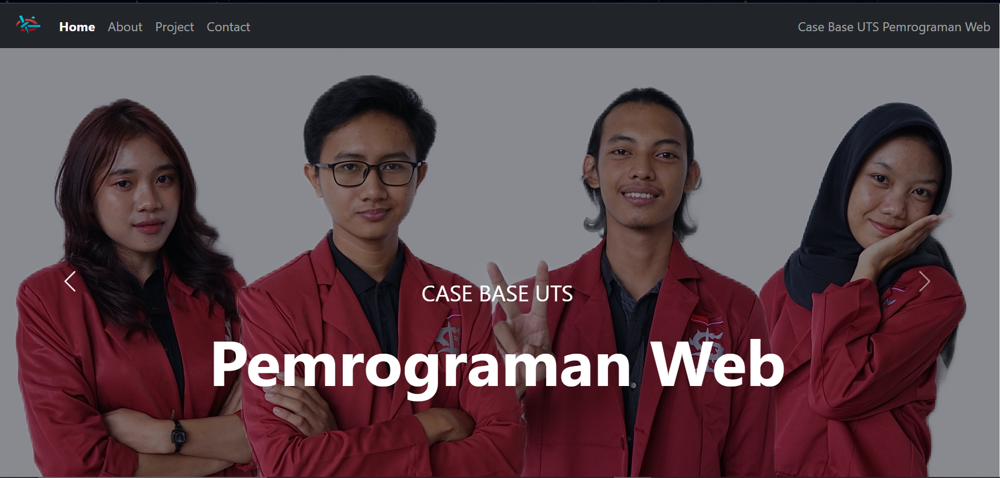
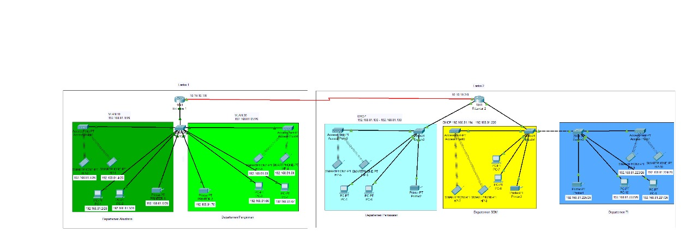

Project
Pemrograman Beriorientasi Object
Library Management
Program ini menggunakan bahasa Java yang dioperasikan di Netbeans, tujuan dari program ini adalah untuk mempermudah pengelolaan buku di Perpustakaan, memiliki 2 User yaitu Admin dan Pustakawan.
Screenshot Program
 Pemrograman Web
Web Pengenalan Diri
Web ini menggunakan html, css dan js. Tujuan dari web ini selain memenuhi penilaian UTS juga untuk mengenalkan diri dari anggota project seperti Biodata, Foto, Kontak dll.
Screenshot Program

Jaringan dan Komputer
Desain Jaringan Routing
Project ini adalah tugas besar dari mata kuliah jaringan komputer. project ini menggunakan Cisco Packet Tracer, dimulai dari konfigurasi subnetting, DHCP Server, routing dinamis, routing static, lalu dokumentasi alamat IP.
Screenshot Program
Pengolahan Citra Digital
Program Pendeteksi wajah
Proyek ini menggunakan teknologi pengolahan citra untuk mengenali wajah dalam gambar atau video. Langkah-langkahnya meliputi pengumpulan data wajah, pelatihan model dengan Convolutional Neural Networks, validasi, dan pengujian. Hasilnya adalah aplikasi pendeteksi wajah untuk berbagai tujuan seperti keamanan dan otentikasi.